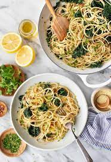

Aglio e Olio: Oil, Garlic, Pasta. Success.
Aglio e Olio: Oil, Garlic, Pasta. Success

Do you like pasta? Do you like Garlic? Excellent.
A creamy sauce of emulsified oil and pasta water, flavoured with garlic and whatever else you want. What could go wrong? A dish enjoyed by students, the lazy, and chefs alike
Ingredients
- 125g Pasta
- Water
- Olive Oil
- Salt
- 6 Cloves of garlic
- Red pepper flakes
- Parsley
- Optional: Cheese of your choosing
- The first step is the same as always, put your water on to boil.
- Once the water is boiling, add enough salt that it tastes like the sea. Add your pasta
- Put a cup of olive oil into a pan over medium heat, allow it to come up to temperature.
- While this is warming, chop your garlic and parsley. Optional: grate your cheese at this point.
- Once your garlic is done and the oil is up to temp, add the garlic to the oil and cook until fragrant. Add the chili flakes immediately afterwards. Bring off the heat.
- Once your pasta is done to your liking, add the pasta to the pan straight from the pot. Bring a small amount of pasta water in as well. Agitate until the sauce emulsifies.
- Add your chopped parsley, dish it up onto a plate and enjoy!
Finally, back to home for more delicious recipes